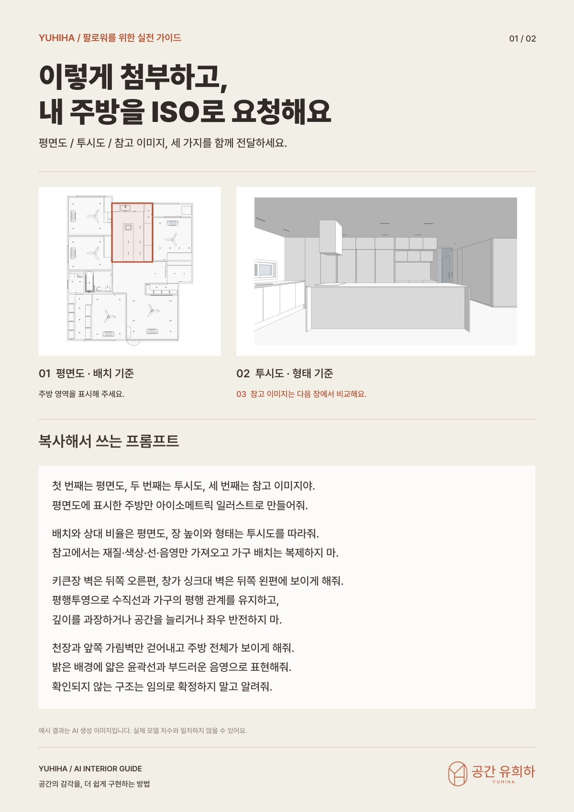
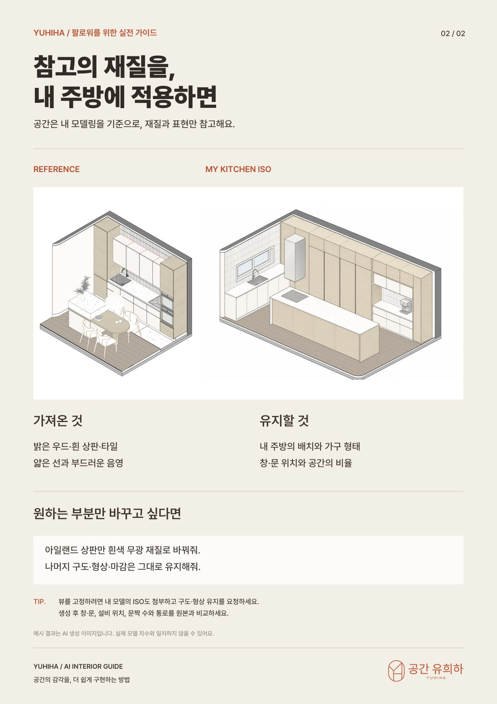

YUHIHA / AI INTERIOR GUIDE내 방을 ISO로
내 방을 ISO로
만드는 법
평면도·투시도·참고 이미지 세 장만 첨부하면, 주방·거실·침실 어느 방이든 배치는 그대로 두고 참고 이미지의 재질과 표현만 가져와 아이소메트릭(ISO) 일러스트로 만들 수 있어요. 첨부 방법과 복사해서 쓰는 프롬프트를 2쪽에 정리했어요. 가이드 예시는 주방이에요.
가이드 PDF 받기2쪽 · 7.3MB프롬프트는 그대로 복사하세요. PDF 1쪽의 프롬프트를 복사해서 이미지 생성 기능이 있는 AI(ChatGPT 등)에 세 장의 이미지와 함께 보내면 돼요.
01들어 있는 것
- 무엇을 첨부할지 — 평면도(배치 기준) · 투시도(형태 기준) · 참고 이미지(재질·표현)
- 복사해서 쓰는 프롬프트 — 배치는 지키고 재질·선·음영만 가져오게 요청하는 문장
- 가져온 것 vs 유지할 것 — 참고 이미지와 내 방 ISO 비교
- 부분만 바꾸는 요청 — 아일랜드 상판만 바꾸는 식의 수정 프롬프트와 확인 팁
예시 결과는 AI 생성 이미지라 실제 모델 치수와 다를 수 있어요. 생성한 뒤 창·문, 설비 위치, 문짝 수와 통로를 원본과 꼭 비교해 주세요.
00이용 조건
- 개인 공부와 실무에 자유롭게 참고하실 수 있어요.
- PDF를 다른 곳에 올리거나 재배포·판매할 수 없어요.
- 강의·교육 자료로 쓰시려면 먼저 @yuhiha_designers로 연락 주세요.
주변에 알려 주고 싶으시면 파일 대신 인스타 게시물을 공유해 주세요 🙏
02가이드 미리보기2쪽

